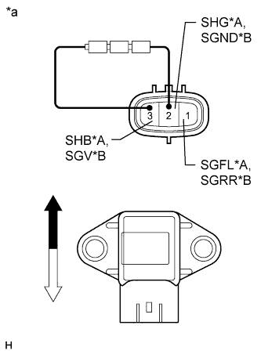

DTC C1715/15 Front Acceleration Sensor RH Malfunction |
DTC C1716/16 Front Acceleration Sensor LH Malfunction |
DTC C1717/17 Rear Acceleration Sensor Malfunction |
DTC C1796/96 (Up & Down) G Sensor FR |
DTC C1797/97 (Up & Down) G Sensor FL |
DTC C1798/98 (Up & Down) G Sensor Rear |
| DTC Code | DTC Detection Condition | Trouble Area |
| C1715/15 | Either condition is met:
|
|
| C1716/16 | Either condition is met:
| Suspension control ECU (front acceleration sensor LH) |
| C1717/17 | Either condition is met:
|
|
| C1796/96 | On a level surface, the G sensor input is +/- 1.96 m/s2 or more for 1 second or more. |
|
| C1797/97 | On a level surface, the G sensor input is +/- 1.96 m/s2 or more for 1 second or more. | Suspension control ECU (front acceleration sensor LH) |
| C1798/98 | On a level surface, the G sensor input is +/- 1.96 m/s2 or more for 1 second or more. |
|
| 1.READ VALUE USING INTELLIGENT TESTER (G SENSOR) |
Turn the engine switch off.
Connect the intelligent tester to the DLC3.
Turn the engine switch on (IG).
Turn the intelligent tester on.
Enter the following menus: Chassis / Air suspension / Data List.
| Tester Display | Measurement Item/Range | Normal Condition | Diagnostic Note |
| (Up & Down) G Sensor FR | Front acceleration sensor RH (up and down) / Min.: -1045.29 m/s2 Max.: 1045.26 m/s2 | 0 +/- 0.98 m/s2 when stationary | The value changes when the vehicle (Front RH) is bounced. |
| (Up & Down) G Sensor FL | Front acceleration sensor LH (up and down) / Min.: -1045.29 m/s2 Max.: 1045.26 m/s2 | 0 +/- 0.98 m/s2 when stationary | The value changes when the vehicle (Front LH) is bounced. |
| (Up & Down) G Sensor Rear | Rear acceleration sensor (up and down) / Min.: -1045.29 m/s2 Max.: 1045.26 m/s2 | 0 +/- 0.98 m/s2 when stationary | The value changes when the vehicle (rear) is bounced. |
|
| ||||
| OK | ||
| ||
| 2.INSPECT ACCELERATION SENSOR (FRONT RH OR REAR) |
|  |
Check the front acceleration sensor RH (when DTC C1715/15 or C1796/96 is output).
Remove the front acceleration sensor RH (Click here).
Connect 3 dry cell batteries of 1.5 V in series.
Connect the positive (+) end of the batteries to terminal 3 (SHB) of the acceleration sensor and the negative (-) end of the batteries to terminal 2 (SHG). Then measure the voltage between terminal 1 (SGFL) and terminal 2 (SHG).
Measure the voltage according to the value(s) in the table below.
| Tester Connection | Condition | Specified Condition |
| 1 (SGFL) - 2 (SHG) | Sensor in vertical position | Approx. 2.0 to 2.5 V |
| Sensor tilted left or right from vertical position | Changes between approx. 0.9 and 2.3 V |
| *A | for Front RH |
| *B | for Rear |
| *a | Component without harness connected (Acceleration Sensor) |
 | Up |
 | Down |
Check the rear acceleration sensor: (when DTC C1717/17 or C1798/98 is output).
Remove the rear acceleration sensor (Click here).
Connect 3 dry cell batteries of 1.5 V in series.
Connect the positive (+) end of the batteries to terminal 3 (SGV) of the acceleration sensor and the negative (-) end of the batteries to terminal 2 (SGND). Then measure the voltage between terminal 1 (SGRR) and terminal 2 (SGND).
Measure the voltage according to the value(s) in the table below.
| Tester Connection | Condition | Specified Condition |
| 1 (SGRR) - 2 (SGND) | Sensor in vertical position | Approx. 2.0 to 2.5 V |
| Sensor tilted left or right from vertical position | Changes between approx. 0.9 and 2.3 V |
| Result | Proceed to |
| OK | A |
| NG (Front acceleration sensor RH) | B |
| NG (Rear acceleration sensor) | C |
|
| ||||
|
| ||||
| A | |
| 3.CHECK HARNESS AND CONNECTOR (ACCELERATION SENSOR - SUSPENSION CONTROL ECU) |
Check the front acceleration sensor RH (when DTC C1715/15 or C1796/96 is output).
Disconnect the A10 front acceleration sensor RH connector.
Disconnect the A11 suspension control ECU connector.
Measure the resistance according to the value(s) in the table below.
| Tester Connection | Condition | Specified Condition |
| A10-1 (SGFL) - A11-18 (SGFR) | Always | Below 1 Ω |
| A10-2 (SHG) - A11-10 (SGR) | Always | Below 1 Ω |
| A10-3 (SHB) - A11-9 (SBR) | Always | Below 1 Ω |
| A10-1 (SGFL) - Body ground | Always | 10 kΩ or higher |
| A10-2 (SHG) - Body ground | Always | 10 kΩ or higher |
| A10-3 (SHB) - Body ground | Always | 10 kΩ or higher |
Check the rear acceleration sensor: (when DTC C1717/17 or C1798/98 is output).
Disconnect the R21 rear acceleration sensor connector.
Disconnect the A40 suspension control ECU connector.
Measure the resistance according to the value(s) in the table below.
| Tester Connection | Condition | Specified Condition |
| R21-1 (SGRR) - A40-26 (SGRR) | Always | Below 1 Ω |
| R21-2 (SGND) - A40-16 (SGR3) | Always | Below 1 Ω |
| R21-3 (SGV) - A40-17 (SBR3) | Always | Below 1 Ω |
| R21-1 (SGRR) - Body ground | Always | 10 kΩ or higher |
| R21-2 (SGND) - Body ground | Always | 10 kΩ or higher |
| R21-3 (SGV) - Body ground | Always | 10 kΩ or higher |
|
| ||||
| OK | ||
| ||